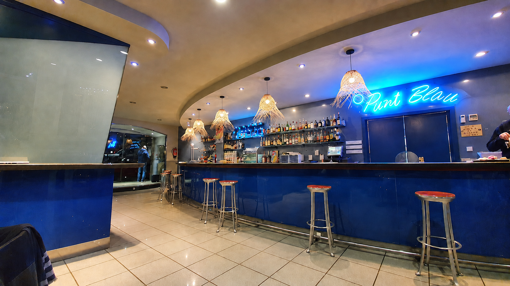

Tapas y torradas
Opciones para picar, compartir y disfrutar de sabores conocidos en cualquier momento del día.

Bar · Cocina tradicional · Viladecavalls
Tapas, torradas, guisos, desayunos y menú diario en un ambiente cercano con una amplia terraza.
Carrer Antoni Soler Hospital, 5 · ViladecavallsPunt Blau
En Punt Blau apostamos por la cocina tradicional bien hecha: tapas, torradas, guisos, desayunos y propuestas que cambian según el día.
Un lugar para comer, compartir y disfrutar sin artificios, también al aire libre en nuestra terraza de 140 m².
Nuestra propuesta
Opciones para picar, compartir y disfrutar de sabores conocidos en cualquier momento del día.
Guisos de ternera y platos sencillos elaborados con una propuesta directa y sin adornos innecesarios.
La oferta puede variar, por eso puedes llamarnos para consultar el menú o las propuestas disponibles hoy.
Consultar por teléfono →Empezamos temprano de lunes a viernes para que también puedas pasar por Punt Blau desde primera hora.
Galería
Horarios
Los horarios pueden cambiar en festivos. Para confirmar, puedes llamarnos antes de venir.
Visítanos
Terraza · Menú diario · Carta · Para llevar · Tapas